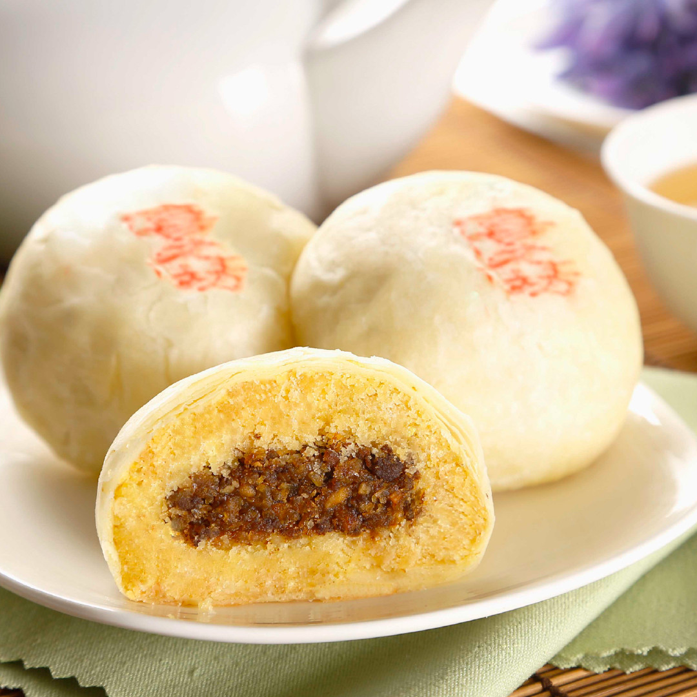
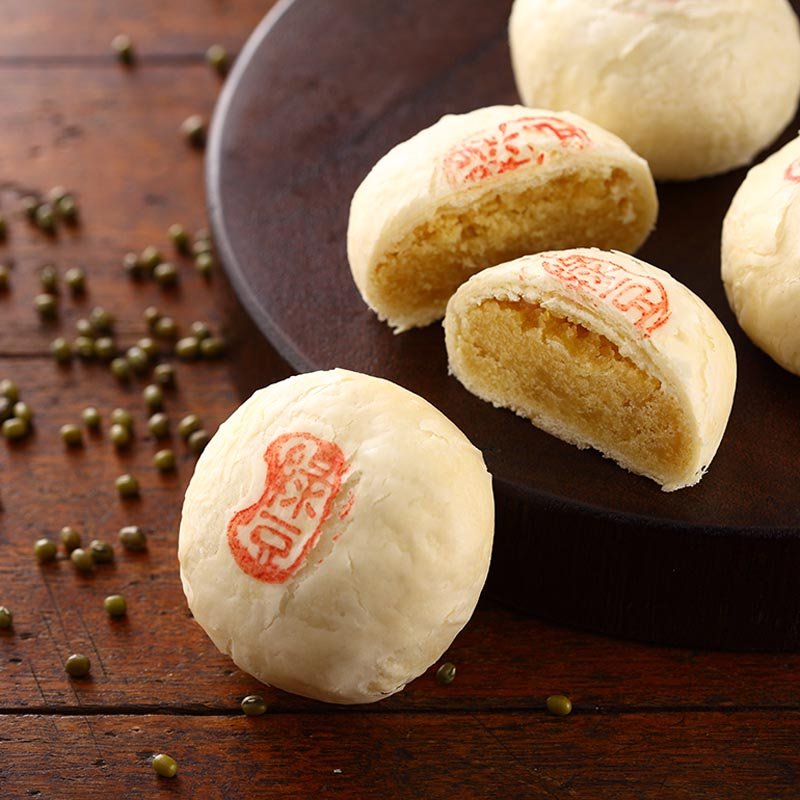
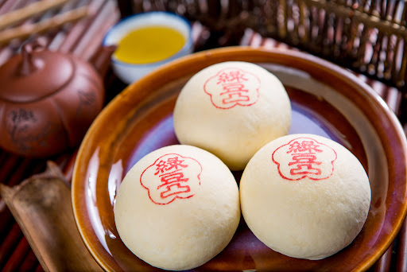

1.別稱 綠豆凸 (台語發音:【膨】phòng)又稱豐原月餅，烘烤後餅皮中間凸起來，白凸凸如乒乓球的圓潤外型，所以台語發音取「ㄆㄥˋ」 2.由來  綠豆凸是台中豐原老雪花齋餅店創辦人呂水發明而來的，常有人邊吃邊問「綠豆椪」的名稱由來。 呂水的兒子呂松吉回憶說，當年他父親推出這項新產品，客人來店購買時指著餅問他母親這餅怎麼稱呼，母親頓時被問得張口結舌， 但看見月餅像個桌球，以綠豆為餡，她靈機一動，向客人說叫「綠豆椪」。 西元1926年（日治大正15年）呂水以雪花月餅送審， 榮獲「台灣區糕餅展」銅牌大獎。創下日據時代，漢人首度獲此殊榮， 綠豆椪之名從此響遍全台至今。 3.習俗 中秋節是遠古天象崇拜――敬月而來。  據《周禮春官》記載，周代已有「中秋夜迎寒」、「中秋獻良裘」、 「秋分夕月(拜月)」的活動； 漢代，又在中秋或立秋之日敬老、養老，賜以雄粗餅。 唐代以後，民間將中秋與嫦娥奔月、玉兔搗藥等神話故事結合起而在民間才逐漸興起。 最初的月餅叫小餅、宮餅、團圓餅。漢武帝時張騫的使節出使西域， 帶回了芝麻和胡桃，於是就有了用胡桃仁做餡的圓形餅，叫做「胡餅」。 盛唐時，一年中秋的夜晚，明月初升，唐玄宗和楊貴妃在皎潔的月光下一起吃胡餅。唐玄宗說:「這胡餅的名字不好聽。」 在一旁的楊貴妃為了討皇上歡心，望了望天上的明月，隨口回答說：「那就把它叫作月餅吧！」 至此，「月餅」的名稱便在民間逐漸流傳開來。 《[[西湖遊覽志》稱：「民間以月餅相饋，取團圓之義。」 蘇東坡以「小餅如嚼月，中有酥和飴」來讚譽月餅 。月餅最初是用來祭奉月神的祭品，後來人們逐漸把中秋賞月與品嘗月餅， 作為家人團圓的象徵，慢慢月餅也就成了節日的禮品。 中秋吃月餅的習俗還與朱元璋有關。相傳元朝末年，群雄並起， 朱元璋欲聯合其他反抗力量抗元，但元官兵搜查嚴密， 苦於無從傳遞消息。謀臣劉伯溫想出一計策，命王昭光製造餅子，將寫有「八月十五夜起義」的紙條藏入餅子裡面。 再使人分頭傳送到各地起義軍中，通知他們在八月十五日晚上起義響應。 為了紀念這一功績，因而中秋吃月餅的習俗也就傳了下來。 特別在北方地區，有「八月十五殺韃子」的說法。 4.發展  綠豆椪最初從純素的綠豆沙內餡為基礎，發展到現在有的餅店以綠豆沙餡為主，佐以山藥泥、紹興蛋黃、紅豆牛奶等甜鹹交織口味的內餡搭配， 跳脫傳統制式窠臼，更讓綠豆椪爭奇鬥艷。 在高雄，年年更有以綠豆椪為主題主辦的官方烘焙大賽。一顆白凸凸的綠豆椪，竟也能做到如此的表現、百家爭鳴。 5.早期綠豆椪的做法 據師傅說，以前古早人烤餅都是選用炭火烘烤，但是因為木炭烘焙火候不好控制，倘若沒有足夠烘焙經驗，時時注意火力大小進行翻面，烤餅很容易受熱不均或是烤至焦黑，而浪費整盤烤餅。 在某次烘焙的過程當中，師傅因為忘了將餅翻面，結果烘焙出來的餅皮白凸蓬鬆，反而比雙面不斷翻面烘烤的餅皮來的漂亮。 為了怕食材浪費，一開始更僅以純綠豆沙餡，用油酥皮的作法，將包好的烤餅送到烤爐內進行烘烤，沒想到這樣的實驗品一出爐便大受客人好評，不僅外型白凸可愛， 而隨意因為外型白凸而取名的綠豆椪「ㄆㄥˋ」（也有人稱綠豆凸），便這樣在客人的口耳之間流傳。 6.和廣式月餅的差異 白凸凸的台式月餅綠豆椪在和廣式月餅相較之下低油、低脂、低糖，熱量普遍也沒那麼高，所以在講究健康養生飲食和送禮外觀需求的現代新趨勢， 更受大眾歡迎，擄獲不少葷素人口的購買意願，更成為台灣月餅口味款式主流。 7.材料和做法 (1)外皮： 中筋麵粉、糖, 水、油 (2)油酥： 中筋麵粉、食用油 (3)綠豆餡料： 去皮綠豆、油、糖、鹽
來源(1)